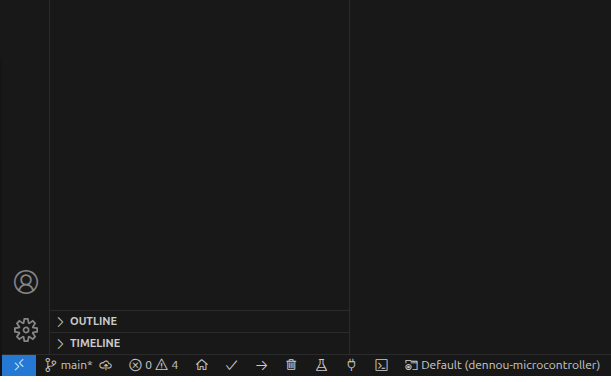

Arduino言語での "Hello, World"とLEDの点滅
Arduino言語の基本
まずは、Arduino言語のプログラムがどんな構造になっているか見てみましょう。
void setup() {
// 初期化処理
}
void loop() {
// メインの処理
}
setup()関数はプログラムの最初に一度だけ実行される初期化処理を担当します。一方、loop()関数はプログラムが動いている間ずっと繰り返し実行されるメインの処理を書きます。C言語で例えると、こんな感じです。
int main(){
setup();
while(1){
loop();
}
}
このwhile(1)のループ構造が、マイコンプログラミングの基本です。電源が入っている限り、無限にloop()を呼び出し続けることで、外部からの入力や時間の経過に応じて動作し続けます。
変数にはスコープがあるので、関数内で定義した変数はその関数の中だけで使えます。もしsetup()で定義した変数をloop()でも使いたい場合は、グローバル変数として関数の外で定義する必要があります。
一般的にはグローバル変数はあまり使わない方がいいとされていますが、マイコンではメモリが限られているため、そこまで問題になることは少なくグローバル変数を使うこともよくあります。
では、実際にRaspberry Pi Picoを使って試してみましょう。基本的なソースコードは用意されているので、必要に応じて修正してみてください。
Serial通信で "Hello, World" を表示してみよう
void setup() {
Serial.begin(115200);
}
横道：通信速度 (Baud Rate) とは？
`Serial.begin(115200)`の`115200`は**ボーレート（Baud Rate）**といい、1秒間に何ビットのデータを送れるかを示す通信速度の単位です。送信側と受信側でこの設定が合っていないと、データが正しく解釈されず、文字化け（通称「宇宙語」）が発生します。なぜ`9600`や`115200`といった一見中途半端な数字が使われるかというと、これらは歴史的に水晶発振子の周波数を整数で分周して作りやすい、標準的な速度だったからです。Raspberry Pi PicoのようなモダンなマイコンはUSBをネイティブにサポートしているため、この値はPCとの仮想的な通信ポートでの速度設定となり、古いシリアルポートほど厳密な意味は持ちませんが、お作法として設定しています。void loop() {
Serial.println("Hello, World!");
delay(1000);
}
マイコンにはパソコンのような画面がないので、プログラムの実行結果を確認するにはSerial通信（UARTとも呼ばれます）を使います。これは、マイコンとパソコンをUSBでつないで、シリアルポートを通じてデータをやり取りする方法です。
Arduinoでは、Serialクラスを使うことで簡単にシリアル通信ができます。まず、Serial.begin(115200);で通信を開始し、Serial.println("Hello, World!");でデータを送信します。
もし、通信ができない場合は、VSCodeの下の、シリアルポートを選択するところを確認してください(コネクタのマーク)。

Serial通信（UART）の詳細
UARTはTXとRXという2本の線でデータを送受信する通信方式です。USB接続の場合、TXとRXの信号線をUART-USB変換チップを通して通信します。Raspberry Pi Picoにはこの変換チップが内蔵されているので、USBケーブルをつなぐだけでUART通信が可能です。他のマイコンと通信する場合は、TXとRXの信号線を直接接続します。 UARTは歴史のある通信方式で、昔はRS-232Cという端子を使っていました。この方式は、大型コンピュータと端末（キーボードやディスプレイ）をつなぐのにも使われていました。クラスとは
クラスは、データ（変数）とそのデータを操作する関数（メソッド）をひとまとめにした新しい変数のデータ型です。クラスを使うことで、プログラムを整理しやすくなります。 Arduinoの`Serial`クラスはその一例で、シリアル通信に必要なデータや操作をまとめています。例えば、UART通信では0と1のビット列でデータを送受信しますが、制御信号やデータのビット数、受信バッファなどを管理する必要があります。`Serial`クラスは、これらをひとまとめにして提供してくれます。 Arduinoには他にも便利なクラスが用意されています。例えば、センサとの通信に使う`Wire`クラスや、サーボモータを制御する`Servo`クラスなどがあります。これらを使えば、ハードウェアの操作が簡単にできます。クラスの初期化
気づいた人もいるかもしれませんが、`Serial`クラスのインスタンスを自分で作っていませんよね。Arduinoでは、`Serial`クラスのインスタンスがあらかじめ用意されています。これは、Arduinoのライブラリが内部で`Serial`クラスのインスタンスを作成し、グローバル変数として提供しているからです。LEDを光らせるための準備：抵抗の計算
ただライブラリを使ってLチカ（LEDをチカチカさせること）を動かすだけでは、本当の実力は身につきません。なぜその回路で動くのか、その部品はなぜ必要なのかを理解することが、自分で回路を設計する第一歩です。
なぜ抵抗が必要か？
LEDは「Light Emitting Diode（発光ダイオード）」の略で、ダイオードの一種です。ダイオードは、一定の電圧（順方向電圧, VF）を超えると、急激に電流が流れる特性を持っています。もしマイコンのGPIOピン（3.3V）に直接LEDを接続すると、LEDに過大な電流が流れてしまい、一瞬で壊れてしまいます。最悪の場合、マイコンのピンを破損させる原因にもなります。
そこで、LEDに流れる電流を適切な値に制限するために、電流制限抵抗を直列に接続します。
オームの法則で抵抗値を計算する
抵抗値の計算には、中学校の理科で習ったオームの法則を使います。 電圧 (V) = 電流 (I) × 抵抗 (R)
抵抗 (R) = 抵抗にかかる電圧 (V) / 流したい電流 (I)
- 抵抗にかかる電圧(V): マイコンのピンの電圧（3.3V）から、LEDにかかる電圧（順方向電圧 VF）を引いた値です。
- 流したい電流(I): LEDに流す電流（順方向電流 IF）です。
一般的な赤色LEDの仕様は、データシートを見るとおよそ VF = 2.0V, IF = 20mA (0.02A) が最大定格です。安全を見て 15mA (0.015A) 程度で計算しましょう。
R = (3.3V - 2.0V) / 0.015A = 1.3V / 0.015A = 86.67 Ω
この値ちょうどの抵抗はないので、近い値でこれより少し大きい、100Ω や 220Ω の抵抗を選びます。
横道：抵抗での消費電力（ワット数）
抵抗は電気エネルギーを熱エネルギーに変換することで電流を制限します。このとき消費される電力が**電力(P)**で、`電力(P) = 電圧(V) × 電流(I)`で計算できます。 今回の抵抗には1.3Vの電圧がかかり、0.015Aの電流が流れるので、`P = 1.3V * 0.015A = 0.0195W` となります。 私たちが普段使う小さな抵抗は、通常1/4W (0.25W)や1/8W (0.125W)の定格電力を持っています。0.0195Wは定格よりずっと小さいので、全く問題ありません。しかし、もっと大きな電流を扱う回路では、この計算を怠ると抵抗が焼き切れることがあります。マイコンでLEDを点灯させてみよう
次はマイコンから物理的な対象を制御してみましょう。ここでは、LEDを点滅させてみます。 回路図は以下のようになります。
ソースコードです。
#define LED_PIN 13
void setup() {
pinMode(LED_PIN, OUTPUT); // LEDピンを出力モードに設定
}
void loop() {
digitalWrite(LED_PIN, HIGH); // LEDを点灯
delay(1000); // 1秒待機
digitalWrite(LED_PIN, LOW); // LEDを消灯
delay(1000); // 1秒待機
}
このプログラムでは、#defineを使ってLEDが接続されているピン番号を指定しています。pinMode()関数でそのピンを出力モードに設定し、digitalWrite()関数でピンの状態をHIGH（点灯）またはLOW（消灯）に切り替えます。
-
#defineの役割#defineは定数を定義するために使用されます。この例では、LED_PINに13を割り当てています。これにより、コードの可読性が向上し、ピン番号の変更も簡単です。
-
pinMode()関数pinMode()はピンの動作モードを設定します。- OUTPUT: 出力モード（例: LED制御）。
- INPUT: 入力モード（例: センサ読み取り）。
- INPUT_PULLUP: 内部プルアップ抵抗を有効にした入力モード。
-
digitalWrite()関数digitalWrite()はピンにHIGH（点灯）またはLOW（消灯）の信号を出力します。一度、HIGHにすると、そのままの電圧がかかり続けます。
横道：論理レベル (Logic Level) とレベルシフタ
`HIGH`が何ボルトを指すかはマイコンによって異なります。PicoやESP32のようなモダンなマイコンは**3.3V**系、古いArduino Unoなどは**5V**系です。異なる電圧系のデバイス間で通信を行う場合、細心の注意が必要です。 - **5V → 3.3Vへの入力（危険！）**: 5V系のデバイスの出力を、3.3V系のマイコンの入力ピンに**絶対に直接接続してはいけません**。マイコンのピンが対応できる電圧（絶対最大定格）を超えてしまい、**ピンが物理的に破損する**原因になります。 - **3.3V → 5Vへの入力（条件付きでOK）**: 逆に、3.3V系の出力を5V系の入力に接続する場合、多くの場合**直結しても動作します**。これは、多くの5V系デバイス（TTLやCMOSロジック）が、入力電圧の閾値（スレッショルド）として、2.0V〜2.4Vあたりを`HIGH`として認識するように設計されているためです。3.3Vはこの閾値を十分に超えているため、`HIGH`として正しく認識されます。ただし、これは常に保証されるわけではなく、ノイズマージンが減るなどの問題もあるため、確実な動作のためには後述のレベルシフトが推奨されます。 #### レベル変換の方法 安全で確実な通信のためには、**レベルシフタ（レベル変換回路）**を使います。専用のICもありますが、簡単な部品でも自作できます。 ##### 1. 抵抗分圧（5V→3.3V 片方向） 5Vの信号を3.3Vに変換する最も簡単な方法は、2本の抵抗を使った**分圧回路**です。5V信号 --[ R1 ]--+-- 3.3Vマイコン入力ピン
|
[ R2 ]
|
GND
LV (3.3V) --[ プルアップ抵抗 ]-- LV側信号線 --+-- MOSFETのゲート(G)
|
HV (5V) --[ プルアップ抵抗 ]-- HV側信号線 --+-- MOSFETのドレイン(D)
|
+-- MOSFETのソース(S)
delay()関数delay()は指定したミリ秒だけ処理を停止します。
なぜdelay()は嫌われるのか？ ノンブロッキング処理の勧め
上のLチカプログラムは完璧に見えますが、delay(1000)には大きな問題があります。delay()は、指定された時間だけCPUを完全に停止させます。これをブロッキング処理と呼びます。
LEDを1秒おきに点滅させながら、ボタンが押されたら別のLEDを光らせる、という処理を考えてみましょう。
// ダメな例
void loop() {
// LEDを点灯
digitalWrite(LED_PIN, HIGH);
delay(1000); // この1秒間、下のボタン処理は完全に無視される！
// LEDを消灯
digitalWrite(LED_PIN, LOW);
delay(1000); // この1秒間も、ボタン処理は無視される！
// この処理は2秒に一瞬しか実行されない
if (digitalRead(BUTTON_PIN) == HIGH) {
digitalWrite(ANOTHER_LED_PIN, HIGH);
}
}
これでは、ボタンを押しても最大2秒間反応がありません。これでは使い物になりません。
millis()を使った解決策
delay()の代わりに、millis()関数を使います。millis()は、プログラムが起動してからの経過時間をミリ秒単位で返します。これと前回の実行時間を比較することで、CPUを止めずに一定時間待つのと同じ効果が得られます。これをノンブロッキング処理と呼びます。
#define LED_PIN 13
const long interval = 1000; // 点滅間隔
unsigned long previousMillis = 0; // 最後にLEDの状態を変えた時間
int ledState = LOW; // LEDの状態
void setup() {
pinMode(LED_PIN, OUTPUT);
}
void loop() {
// 現在の時間を取得
unsigned long currentMillis = millis();
// 前回の実行からinterval以上経過したか？
if (currentMillis - previousMillis >= interval) {
// 時間を更新
previousMillis = currentMillis;
// LEDの状態を反転
if (ledState == LOW) {
ledState = HIGH;
} else {
ledState = LOW;
}
digitalWrite(LED_PIN, ledState);
}
// ここに他の処理を書ける！
// 例えばボタンの処理など。Lチカの待ち時間に関係なく、毎ループ実行される。
// if (digitalRead(BUTTON_PIN) == HIGH) { ... }
}
この書き方は、一見複雑ですが、複数の処理を同時に（正確には、ごく短い間隔で切り替えながら）実行する、応答性の高いプログラムを作るための基本テクニックです。
LEDを暗くしたり明るくしたりしてみよう（PWM制御）
発展：スイッチのチャタリングとデバウンス
INPUTモードでスイッチ（タクトスイッチなど）の状態を読むとき、新たな問題が発生します。スイッチは物理的な金属接点なので、押した瞬間や離した瞬間に、目に見えない速さでON/OFFを何度も繰り返します。これをチャタリング（chattering）と呼びます。
もし「ボタンが押されたらカウンターを1増やす」というプログラムを単純に書くと、1回押しただけなのにカウンターが5も10も増えてしまう現象が発生します。これを防ぐ処理がデバウンス（debounce）です。
// デバウンス処理を行わない、チャタリングに弱いコード
void loop() {
// 押された瞬間（LOWになった瞬間）を検出
if (digitalRead(BUTTON_PIN) == LOW) {
counter++;
Serial.println(counter);
// この後、スイッチが物理的にバウンドしている間、
// loopは高速で回り続けるので、何度もLOWを検出してしまう
while(digitalRead(BUTTON_PIN) == LOW); // 押しっぱなしの間は待つ
}
}
ソフトウェアデバウンス
millis()を使い、一度スイッチの状態変化を検出したら、その後数十ミリ秒はスイッチの状態を見ないようにすることで、チャタリングを無視します。
const int BUTTON_PIN = 2;
unsigned long lastDebounceTime = 0; // 最後にチャタリングを検出した時間
unsigned long debounceDelay = 50; // 50msはチャタリングを見ない
void setup() {
pinMode(BUTTON_PIN, INPUT_PULLUP); // 内部プルアップを有効化
}
void loop() {
int reading = digitalRead(BUTTON_PIN);
// 状態が変化し、かつチャタリング待機時間を超えていたら
if (reading != lastButtonState) {
lastDebounceTime = millis();
}
if ((millis() - lastDebounceTime) > debounceDelay) {
// 状態が安定したと判断
if (reading != buttonState) {
buttonState = reading;
// 押された瞬間（HIGH->LOW）なら何かする
if (buttonState == LOW) {
// ... ボタンが押された時の処理 ...
}
}
}
lastDebounceTime = reading;
}
（上記は概念を示すコードです。完全な動作にはもう少し状態管理が必要です）